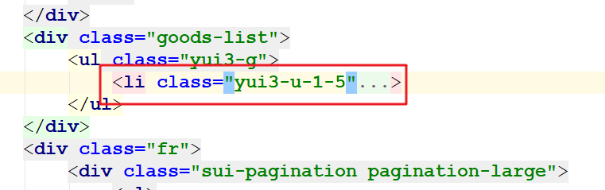
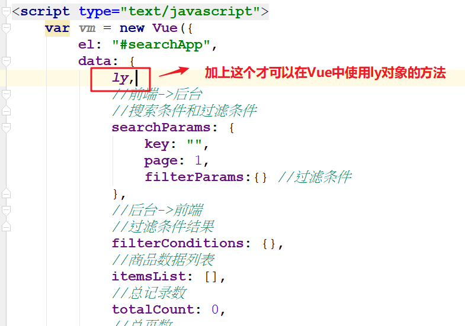
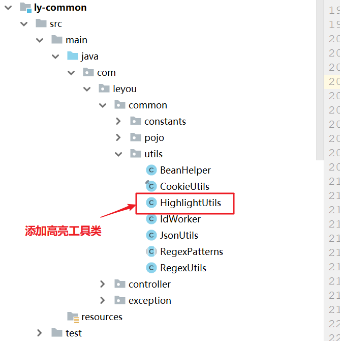

00、课程目标
- 实现搜索页渲染与展示
01、搜索页渲染：微服务搜索功能基本代码
今天我们主要工作就是从Elasticsearch中检索数据，最终展示到搜索页面上。效果如下：

1） 定义接收请求参数的dto对象
在ly-pojo-search模块中提供一个DTO接口，用于接收页面传递的搜索参数和分页参数
package com.leyou.search.dto;
/**
* 用于接收搜索页面传递的参数
*/
public class SearchRequest {
private String key;// 搜索条件
private Integer page;// 当前页
private static final Integer DEFAULT_SIZE = 20;// 每页大小，不从页面接收，而是固定大小
private static final Integer DEFAULT_PAGE = 1;// 默认页
public String getKey() {
return key;
}
public void setKey(String key) {
this.key = key;
}
public Integer getPage() {
if(page == null){
return DEFAULT_PAGE;
}
// 获取页码时做一些校验，不能小于1
return Math.max(DEFAULT_PAGE, page);
}
public void setPage(Integer page) {
this.page = page;
}
public Integer getSize() {
return DEFAULT_SIZE;
}
}2） 定义一个返回商品数据的dto对象
在ly-pojo-search模块中定义一个用于返回商品数据的DTO对象
package com.leyou.search.dto;
import lombok.Data;
/**
* @author 黑马程序员
*/
@Data
public class GoodsDTO {
private Long id; // spuId
private String spuName;// spu名称
private String subTitle;// 卖点
private String skus;// sku信息的json结构
}3）定义一个返回所有搜索结果的对象
package com.leyou.search.dto;
import com.leyou.common.pojo.PageResult;
import lombok.Data;
import java.util.Map;
/**
* 封装所有搜索结果的DTO
*/
@Data
public class SearchResult<T> extends PageResult<T>{
//封装搜索过滤条件
private Map<String,Object> filterConditions;
}
4）编写处理器
package com.leyou.search.controller;
import com.leyou.search.dto.GoodsDTO;
import com.leyou.search.dto.SearchRequest;
import com.leyou.search.dto.SearchResult;
import com.leyou.search.service.SearchService;
import org.springframework.beans.factory.annotation.Autowired;
import org.springframework.http.ResponseEntity;
import org.springframework.web.bind.annotation.PostMapping;
import org.springframework.web.bind.annotation.RequestBody;
import org.springframework.web.bind.annotation.RestController;
/**
*
*/
@RestController
public class SearchController {
@Autowired
private SearchService searchService;
/**
* 商品搜索方法
*/
@PostMapping("/page")
public ResponseEntity<SearchResult<GoodsDTO>> goodsSearchPage(
@RequestBody SearchRequest searchRequest
){
SearchResult<GoodsDTO> searchResult = searchService.goodsSearchPage(searchRequest);
return ResponseEntity.ok(searchResult);
}
}
5）编写业务层
SearchService类添加方法：
public SearchResult<GoodsDTO> goodsSearchPage(SearchRequest searchRequest) {
//1.创建SearchResult<GoodsDTO>对象
SearchResult<GoodsDTO> searchResult = new SearchResult<>();
//2.封装SearchResult<GoodsDTO>对象
//2.1 分页查询商品列表
PageResult<GoodsDTO> pageResult = itemQueryPage(searchRequest);
//2.2 查询搜索过滤条件
Map<String,Object> filterConditions = filterConditionsQuery(searchRequest);
searchResult.setItems(pageResult.getItems());
searchResult.setTotal(pageResult.getTotal());
searchResult.setTotalPage(pageResult.getTotalPage());
searchResult.setFilterConditions(filterConditions);
//3.返回SearchResult<GoodsDTO>对象
return searchResult;
}
/**
* 查询搜索过滤条件
* @param searchRequest
* @return
*/
public Map<String,Object> filterConditionsQuery(SearchRequest searchRequest) {
return null;
}
/**
* 分页查询商品列表
* @param searchRequest
* @return
*/
public PageResult<GoodsDTO> itemQueryPage(SearchRequest searchRequest) {
return null;
}
02、搜索页渲染：渲染商品列表-后端代码
1）原生查询语句(了解)
在Kibana编写根据条件查询商品列表
# 需求： 根据搜索关键词"手机"分页查询商品
GET /goods/_search
{
"query": {
"bool": {
"must": [
{
"match": {
"all": "手机"
}
}
]
}
},
"_source": ["id","spuName","subTitle","skus"],
"from": 0,
"size": 20
}2）SearchService的itemPageQuery方法
/**
* 分页查询商品列表
* @param searchRequest
* @return
*/
public PageResult<GoodsDTO> itemQueryPage(SearchRequest searchRequest) {
//1.创建本地查询构造器
NativeSearchQueryBuilder queryBuilder = new NativeSearchQueryBuilder();
//2.往本地查询构造器添加条件
//2.1 添加Query条件
BoolQueryBuilder boolQueryBuilder = QueryBuilders.boolQuery();
boolQueryBuilder.must(QueryBuilders.matchQuery("all",searchRequest.getKey()));
queryBuilder.withQuery(boolQueryBuilder);
//2.2 添加Source过滤
queryBuilder.withSourceFilter(new FetchSourceFilter(new String[]{"id","spuName","subTitle","skus"},null));
//2.3 添加分页条件
/**
* 参数一： 起始页（当前页码-1），从0开始计算的
* 参数二： 页面大小
*/
queryBuilder.withPageable(PageRequest.of(searchRequest.getPage()-1,searchRequest.getSize()));
//3.执行查询，获取结果
Page<Goods> pageBean = esTemplate.queryForPage(queryBuilder.build(),Goods.class);
//4.处理结果并返回
//4.1 取出Goods集合
List<Goods> goodsList = pageBean.getContent();
//4.2 数据拷贝
List<GoodsDTO> goodsDTOList = BeanHelper.copyWithCollection(goodsList,GoodsDTO.class);
//4.3 封装PageResult<GoodsDTO>
PageResult<GoodsDTO> pageResult = new PageResult<GoodsDTO>(pageBean.getTotalElements(),Long.valueOf(pageBean.getTotalPages()),goodsDTOList);
//返回数据
return pageResult;
}3）页面查看返回数据
确定前端可以接收到后端返回结果

03、搜索页渲染：渲染商品列表-前端实现
1）前端接收返回数据
在之前的loadSearchPage方法中，接收后端返回的结果，注意：
- skus属性为字符串类型，需要转换为Sku的JSON对象
- 需要添加selectedSku属性标记为当前选中的Sku对象
methods:{
//商品搜索
loadSearchPage(){
ly.http.post('/search/page',this.searchParams).then(resp=>{
//接收数据
resp.data.items.forEach(item=>{
//1.把每个item的skus属性转换为Js对象
item.skus = JSON.parse(item.skus);
//2.在每个item里面添加selectedSku属性存入当前选中的Sku（默认第一个选中）
item.selectedSku = item.skus[0];
});
this.items = resp.data.items;
this.total = resp.data.total;
this.totalPage = resp.data.totalPage;
}).catch(e=>{
});
}
},2）渲染数据到页面
删除多余li元素
找到class为goods-list的div，在该div里面把多余的li元素删除，剩下一个li即可
渲染数据
<div class="goods-list">
<ul class="yui3-g">
<li class="yui3-u-1-5" v-for="(item,index) in items" :key="index">
<div class="list-wrap">
<div class="p-img">
<a href="item.html" target="_blank"><img :src="item.selectedSku.images" height="200"/></a>
<ul class="skus">
<li :class="{selected:sku.id==item.selectedSku.id}" v-for="(sku,i) in item.skus" :key="i" @mouseover="item.selectedSku=sku">
<img :src="sku.images">
</li>
</ul>
</div>
<div class="clearfix"></div>
<div class="price">
<strong>
<em>¥</em>
<i>{{ly.formatPrice(item.selectedSku.price)}}</i>
</strong>
</div>
<div class="attr" style="overflow: hidden">
<em>{{item.spuName}}</em>
</div>
<div class="cu" style="overflow: hidden">
<span>促</span><em v-html="item.subTitle"></em>
</div>
<div class="commit">
<i class="command">已有2000人评价</i>
</div>
<div class="operate">
<a href="success-cart.html" target="_blank" class="sui-btn btn-bordered btn-danger">加入购物车</a>
<a href="javascript:void(0);" class="sui-btn btn-bordered">对比</a>
<a href="javascript:void(0);" class="sui-btn btn-bordered">关注</a>
</div>
</div>
</li>
</ul>
</div>注意一个细节：

效果：

04、搜索页渲染：高亮显示
1）后端代码
ly-common导入依赖
<dependency>
<groupId>org.springframework.data</groupId>
<artifactId>spring-data-elasticsearch</artifactId>
</dependency>ly-common添加高亮工具类
在ly-common模块下添加高亮工具类

修改itemPageQuery方法
修改item-search模块的SearchService类的itemPageQuery方法
/**
* 查询搜索商品分页列表
* @param searchRequest
* @return
*/
public PageResult<GoodsDTO> itemQueryPage(SearchRequest searchRequest) {
//1.创建本地查询构造器对象
NativeSearchQueryBuilder queryBuilder = new NativeSearchQueryBuilder();
//2.往本地查询构造器对象添加条件
//2.1 添加query条件
//1）创建布尔查询构造器
BoolQueryBuilder boolQueryBuilder = QueryBuilders.boolQuery();
//2）追加must条件
boolQueryBuilder.must(QueryBuilders.multiMatchQuery(searchRequest.getKey(),"all","spuName"));
queryBuilder.withQuery(boolQueryBuilder);
//2.2 添加结果过滤
queryBuilder.withSourceFilter(new FetchSourceFilter(new String[]{"id","spuName","subTitle","skus"},null));
//2.3 添加分页条件
//注意：参数一代表当前页码，是从0开始的
queryBuilder.withPageable(PageRequest.of(searchRequest.getPage()-1,searchRequest.getSize()));
//2.4 添加高亮字段
HighlightUtils.highlightField(queryBuilder,"spuName");
//3.执行本地查询，获取结果
Page<Goods> pageBean = esTemplate.queryForPage(
queryBuilder.build(),
Goods.class,HighlightUtils.highlightBody(Goods.class,"spuName"));
//4.处理结果，返回结果
List<Goods> goodsList = pageBean.getContent();
//拷贝数据（注意：只拷贝同名属性）
List<GoodsDTO> goodsDTOList = BeanHelper.copyWithCollection(goodsList, GoodsDTO.class);
return new PageResult<>(goodsDTOList,pageBean.getTotalElements(),Long.valueOf(pageBean.getTotalPages()));
}主要修改的地方如下：

2）前端代码

效果：

05、搜索页渲染：渲染固定过滤条件-后端代码
1）原生查询语句(了解)
需求：渲染搜索页过滤条件中的分类和品牌这两个固定过滤条件

# 统计关键词为"手机"的商品有哪些分类？
GET /goods/_search
{
"query": {
"bool": {
"must": [
{
"multi_match": {
"query": "手机",
"fields": ["all","spuName"]
}
}
]
}
},
"_source": [""],
"aggs": {
"categoryAgg": {
"terms": {
"field": "categoryId"
}
},
"brandAgg": {
"terms": {
"field": "brandId"
}
}
}
}2）filterConditionsQuery方法
SearchService类：
/**
* 查询搜索的过滤条件
* @param searchRequest
* @return
*/
public Map<String,Object> filterConditionsQuery(SearchRequest searchRequest) {
//1.创建Map集合，用于存储所有的过滤条件
Map<String,Object> filterConditionsMap = new LinkedHashMap<>();//注意：为了过滤条件有序地展示
//2.封装Map集合所有过滤条件
//2.1 固定过滤条件（分类和品牌）
NativeSearchQueryBuilder queryBuilder = createNativeQueryBuilder(searchRequest);
//1）追加结果过滤
queryBuilder.withSourceFilter(new FetchSourceFilter(new String[]{""},null));
//2）追加聚合条件
//定义聚合别名
String categoryAgg = "categoryAgg";
String brandAgg = "brandAgg";
queryBuilder.addAggregation(AggregationBuilders.terms(categoryAgg).field("categoryId"));
queryBuilder.addAggregation(AggregationBuilders.terms(brandAgg).field("brandId"));
//3）执行聚合查询
//AggregatedPage: 包含聚合结果
AggregatedPage<Goods> aggregatedPage = esTemplate.queryForPage(queryBuilder.build(),Goods.class);
//4）获取所有聚合结果
Aggregations aggregations = aggregatedPage.getAggregations();
//5）获取分类的聚合结果
Terms terms = aggregations.get(categoryAgg);
//获取分类的桶
List<Long> categoryIds = terms.getBuckets()
.stream()
.map(Terms.Bucket::getKeyAsNumber) // 以Number类型取出key值
.map(Number::longValue) //把Number类型转换Long类型
.collect(Collectors.toList());
List<Category> categoryList = itemClient.findCategoriesByIds(categoryIds);
//6）把分类聚合结果存入Map集合
filterConditionsMap.put("分类",categoryList);
//7）获取品牌的聚合结果，并且存入Map集合
Terms brandTerms = aggregations.get(brandAgg);
//获取分类的桶
List<Long> brandIds = brandTerms.getBuckets()
.stream()
.map(Terms.Bucket::getKeyAsNumber) // 以Number类型取出key值
.map(Number::longValue) //把Number类型转换Long类型
.collect(Collectors.toList());
List<Brand> brandList = itemClient.findBrandsByIds(brandIds);
filterConditionsMap.put("品牌",brandList);
//2.2 动态过滤条件（规格参数）
//3.返回Map集合
return filterConditionsMap;
}
/**
* 查询搜索商品分页列表
* @param searchRequest
* @return
*/
public PageResult<GoodsDTO> itemQueryPage(SearchRequest searchRequest) {
NativeSearchQueryBuilder queryBuilder = createNativeQueryBuilder(searchRequest);
//2.2 添加结果过滤
queryBuilder.withSourceFilter(new FetchSourceFilter(new String[]{"id","spuName","subTitle","skus"},null));
//2.3 添加分页条件
//注意：参数一代表当前页码，是从0开始的
queryBuilder.withPageable(PageRequest.of(searchRequest.getPage()-1,searchRequest.getSize()));
//2.4 添加高亮字段
HighlightUtils.highlightField(queryBuilder,"spuName");
//3.执行本地查询，获取结果
Page<Goods> pageBean = esTemplate.queryForPage(
queryBuilder.build(),
Goods.class,HighlightUtils.highlightBody(Goods.class,"spuName"));
//4.处理结果，返回结果
List<Goods> goodsList = pageBean.getContent();
//拷贝数据（注意：只拷贝同名属性）
List<GoodsDTO> goodsDTOList = BeanHelper.copyWithCollection(goodsList, GoodsDTO.class);
return new PageResult<>(goodsDTOList,pageBean.getTotalElements(),Long.valueOf(pageBean.getTotalPages()));
}
/**
* 创建查询条件
* @param searchRequest
* @return
*/
public NativeSearchQueryBuilder createNativeQueryBuilder(SearchRequest searchRequest) {
//1.创建本地查询构造器对象
NativeSearchQueryBuilder queryBuilder = new NativeSearchQueryBuilder();
//2.往本地查询构造器对象添加条件
//2.1 添加query条件
//1）创建布尔查询构造器
BoolQueryBuilder boolQueryBuilder = QueryBuilders.boolQuery();
//2）追加must条件
boolQueryBuilder.must(QueryBuilders.multiMatchQuery(searchRequest.getKey(),"all","spuName"));
queryBuilder.withQuery(boolQueryBuilder);
return queryBuilder;
}3）在ly-item项目提供方法
BrandController:
/**
* 根据品牌ID集合查询品牌集合
*/
@GetMapping("/brand/list")
public ResponseEntity<List<Brand>> findBrandsByIds(@RequestParam("ids") List<Long> ids){
List<Brand> brands = brandService.findBrandsByIds(ids);
return ResponseEntity.ok(brands);
}BrandService:
public List<Brand> findBrandsByIds(List<Long> ids) {
List<Brand> brands = brandMapper.selectBatchIds(ids);
if(CollectionUtils.isEmpty(brands)){
throw new LyException(ExceptionEnum.BRAND_NOT_FOUND);
}
return brands;
}4）在Feign接口提供方法
ItemClient接口：
/**
* 根据分类ID集合获取分类集合
*/
@GetMapping("/category/list")
public List<Category> findCategoriesByIds(@RequestParam("ids") List<Long> ids);
/**
* 根据品牌ID集合查询品牌集合
*/
@GetMapping("/brand/list")
public List<Brand> findBrandsByIds(@RequestParam("ids") List<Long> ids);3）页面查看返回数据

06、搜索页渲染：渲染固定过滤条件-前端代码
1）接收后端返回数据

2）渲染过滤条件页面
<div class="clearfix selector">
<div class="type-wrap" v-for="(value,key,index) in filterConditions" :key="index" v-if="key!='品牌'">
<div class="fl key">{{key}}</div>
<div class="fl value">
<ul class="type-list">
<li v-for="(v,i) in value" :key="i">
<a>{{v.name}}</a>
</li>
</ul>
</div>
<div class="fl ext"></div>
</div>
<div class="type-wrap logo" v-else>
<div class="fl key brand">品牌</div>
<div class="value logos">
<ul class="logo-list">
<li v-for="(v,i) in value" v-if="v.image" :key="i">
<img :src="v.image" />
</li>
<li style="text-align: center" v-else>
<a style="line-height: 30px; font-size: 12px" href="#">{{v.name}}</a>
</li>
</ul>
</div>
<div class="fl ext">
<a href="javascript:void(0);" class="sui-btn">多选</a>
</div>
</div v-else>
<div class="type-wrap" style="text-align: center">
<v-btn small flat>
更多<v-icon>arrow_drop_down</v-icon>
</v-btn>
<v-btn small="" flat>
收起<v-icon>arrow_drop_up</v-icon>
</v-btn>
</div>
</div> 
为了页面样式好看，将事先准备好的样式放开。

最终页面效果如下：
07、搜索页渲染：渲染动态过滤条件-后端代码
1）原生查询语句(了解)
# 统计关键词为"手机"的商品有哪些分类？
GET /goods/_search
{
"query": {
"bool": {
"must": [
{
"multi_match": {
"query": "手机",
"fields": ["all","spuName"]
}
}
]
}
},
"_source": [""],
"aggs": {
"categoryAgg": {
"terms": {
"field": "categoryId"
}
},
"brandAgg": {
"terms": {
"field": "brandId"
}
},
"CPU核数":{
"terms": {
"field": "specs.CPU核数.keyword"
}
}
}
}2）filterConditionsQuery方法
/**
* 查询搜索过滤条件
* @param searchRequest
* @return
*/
public Map<String,Object> filterConditionsQuery(SearchRequest searchRequest) {
//1.创建Map<String,Object>对象 注意：使用LinkedHashMap，为了有序存入，保证页面有序取出
Map<String,Object> filterConditionsMap = new LinkedHashMap<>();
//2.封装Map<String,Object>对象
//2.1.创建本地查询构造器
NativeSearchQueryBuilder queryBuilder = createNativeQueryBuilder(searchRequest);
//2.2 设置结果过滤
queryBuilder.withSourceFilter(new FetchSourceFilter(new String[]{""},null));
//2.3 处理固定的过滤条件（分类和品牌的聚合逻辑）
//定义聚合别名
String categoryAgg = "categoryAgg";
String brandAgg = "brandAgg";
//1）添加分类聚合条件
queryBuilder.addAggregation(AggregationBuilders.terms(categoryAgg).field("categoryId"));
//2）添加品牌聚合条件
queryBuilder.addAggregation(AggregationBuilders.terms(brandAgg).field("brandId"));
//3）执行聚合查询
/**
* Page: 只封装分页列表数据（列表，总记录数，总页数）
* AggregatedPage： 既包含分页列表数据,也包含聚合结果（列表，总记录数，总页数，所有聚合结果）
*/
AggregatedPage<Goods> aggregatedPage = esTemplate.queryForPage(queryBuilder.build(),Goods.class);
//4）取出所有聚合结果
Aggregations aggregations = aggregatedPage.getAggregations();
//====取出分类的聚合结果=====
//1）取出聚合结果
Terms categoryTerms = aggregations.get(categoryAgg);
//2）取出Bucket中的所有key，封装成List集合
List<Long> categoryIds = categoryTerms.getBuckets()
.stream()
.map(Terms.Bucket::getKeyAsNumber) //取出key值返回成Number类型
.map(Number::longValue) //把上面map方法的Number类型的值调用Number的longValue方法转换为Long类型
.collect(Collectors.toList());
//3）根据分类Id集合查询分类对象集合
List<Category> categoryList = itemClient.findCategoriesByIds(categoryIds);
//4）把最终的Map集合存入分类聚合结果
filterConditionsMap.put("分类",categoryList);
//====取出品牌的聚合结果=====
//1）取出品牌结果
Terms brandTerms = aggregations.get(brandAgg);
//2）取出Bucket中的所有key，封装成List集合
List<Long> brandIds = brandTerms.getBuckets()
.stream()
.map(Terms.Bucket::getKeyAsNumber) //取出key值返回成Number类型
.map(Number::longValue) //把上面map方法的Number类型的值调用Number的longValue方法转换为Long类型
.collect(Collectors.toList());
//3）根据品牌Id集合查询品牌对象集合
List<Brand> brandList = itemClient.findBrandsByIds(brandIds);
//4）把最终的Map集合存入品牌聚合结果
filterConditionsMap.put("品牌",brandList);
//=====处理动态搜索过滤条件=======
if(categoryIds!=null){
categoryIds.forEach(categoryId->{
//1）根据分类ID查询用于搜索（searching=true）的规格参数
List<SpecParam> specParams = itemClient.findSpecParams(null, categoryId, true);
//2）把所有得到规格参数添加到聚合条件中
specParams.forEach(specParam -> {
queryBuilder.addAggregation(AggregationBuilders.terms(specParam.getName()).field("specs."+specParam.getName()+".keyword"));
});
//3）执行聚合查询
AggregatedPage<Goods> specParamAggregatedPage = esTemplate.queryForPage(queryBuilder.build(), Goods.class);
//4）逐个规格参数结果取出，并且存入filterConditionsMap中
Aggregations specParamAggregations = specParamAggregatedPage.getAggregations();
specParams.forEach(specParam -> {
//4.1）取出每个规格参数的聚合结果
Terms specParamTerms = specParamAggregations.get(specParam.getName());
//4.2）封装每个规格参数的结果列表
List<Object> specParamValues = specParamTerms.getBuckets()
.stream()
.map(Terms.Bucket::getKey)
.collect(Collectors.toList());
//4.3）存入filterConditionsMap中
filterConditionsMap.put(specParam.getName(),specParamValues);
});
});
}
//2.4 处理动态的过滤条件（规格参数）
//3.返回Map<String,Object>对象
return filterConditionsMap;
}3）页面查看返回数据

08、搜索页渲染：渲染动态过滤条件-前端代码
<div class="type-wrap" v-for="(value,key,index) in filterConditions" :key="index" v-if="key!='品牌'">
<div class="fl key">{{key}}</div>
<div class="fl value">
<ul class="type-list">
<li v-for="(v,i) in value" :key="i">
<a>{{v.name || v}}</a>
</li>
</ul>
</div>
<div class="fl ext"></div>
</div>
09、搜索页渲染：过滤条件收起和更多功能
1） 在data中定义控制收起和更多的布尔值
data: {
//搜索条件和过滤条件
searchParams: {
key: "",
page: 1
},
//过滤条件结果
filterConditions: {},
//商品数据列表
items: [],
//
total: 0,
//总页数
totalPage: 0,
//控制收起和更多的布尔值
showMore: false
},2） 给收起和更多按钮绑定点击事件
<div class="type-wrap" style="text-align: center">
<v-btn small flat @click="showMore=true" v-if="!showMore">
更多<v-icon>arrow_drop_down</v-icon>
</v-btn>
<v-btn small="" flat @click="showMore=false" v-else>
收起<v-icon>arrow_drop_up</v-icon>
</v-btn>
</div>3） 指定过滤条件的显示条件

10、课程总结
1）搜索页展示
1.1 商品列表
1）后台代码（ 创建NativeSearchQueryBuilder，设置withPageable，withQuery条件，执行分页查询，获取Page对象，并封装为PageResult ）
2）前端代码
1.2 固定过滤条件（分类和品牌）
1）后台代码（ 创建NativeSearchQueryBuilder，添加addAggregation聚合条件，执行聚合查询，从AggregatedPage取出聚合结果封装成功 ）
2）前端代码
1.2 动态过滤条件（规格）
1）后台代码（ 创建NativeSearchQueryBuilder，先根据分类id查询规格参数，把规格参数添加addAggregation聚合条件，执行聚合查询，从AggregatedPage取出所有规格参数聚合结果封装成功 ）
2）前端代码